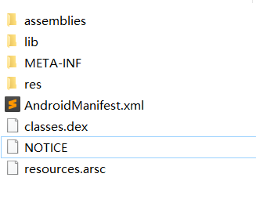

这篇文章主要内容：
Xamarin.Android应用的体系结构
Xamarin.Android应用怎么运行在Android系统中的。
MCW和ACW
Xamarin.Android应用包的结构
前置知识：Android操作系统的基础知识
概述
在Android原生的开发中，主要运行的是Java或Kotlin编译后的字节码（.dex）每个应用单独分配一个ART虚拟机，运行在linux内核之上。
对于其他语言做的应用在Android平台运行，像c/c++这种静态编译的语言，可以直接编译成二进制码，通过JNI（java本地接口）与java通信（调用操作系统的API），直接运行在Library层即可（因为这一层是c/c++实现的，所以这一层也提供了原生c/c++的API供调用）。
而Xamarin是用C#开发的语言，C#和java一样，也是即时编译（JIT）语言，编译成中间语言（IL）之后需要在 .NET虚拟机上运行（在移动端是Mono虚拟机）。Android操作系统本身就没有C#的运行环境，而C#不能直接编译成二进制机器码，所以要融入Android，还需要在每个应用里带着 .NET运行时（Mono虚拟机）。这样C#才能在Android系统里运行。
其实Android本身就是软件叠层的方式构建的操作系统，Android上没有支持C#运行的环境，应用安装的时候自己带上就好了。（就举个简单的栗子：windows本身不带着JRE，而用Java语言写的程序在windows上需要JRE来运行，那么我开发Java应用的时候直接在应用里打包一个给自己专门用的JRE，不就支持所有的Windows操作系统了~ ）
这只是简单来说，其实具体还得解决开发的时候操作系统的API调用等等各种问题。
体系结构
先放一个官网文档里的架构图：
这张图是Xamarin.Android应用在Android平台上运行的架构图。右边的部分是原生的Android应用在Android系统上的架构图。左边是Xamarin.Android项目在对应层里面添加的运行依赖东西。首先就是在ART的同一层添加了Mono虚拟机（c语言实现的），运行在Linux之上。项目里面java编译的字节码通过ART执行，c#编译的字节码通过Mono虚拟机来执行。应用运行的时候，两个虚拟机在Linux内核之上并行运行的。
Xamarin.Android应用需要包装打包Mono虚拟机，所以产生的
.apk文件比原生开发出来的要大。
而且应用运行的时候，比原生应用多运行一个虚拟机，效率自然就低了不少。
两者通信：
当Java代码运行的时候需要调用C#写好的代码的时候，就需要ART通过ACW来使Mono去运行。
对于Xamarin.Android开发人员来说，C#的部分可以调用 .NET API（主要是C#语言的部分），也可以通过一些库来直接访问Linux操作系统的设备。但是Android操作系统大多数的访问（比如电话，音频等）都是java的API来访问的（右边的Java API Framework层），所以才有MCW来调用这些功能。
简单来说，ACW是java代码运行的时候去调用C#代码的桥梁，而MCW是C#的代码去调用java代码的桥梁。
MCW 和 ACW
MCW（Managed Callable Wrappers）：托管可调用包装器
ACW（Android Callable Wrappers）：安卓可调用包装器
ACW: Android callable wrappers are a JNI bridge which are used any time the Android runtime needs to invoke managed code.
ACW是一种JNI(java native interface)桥，这里的managed code指的是C#编译后的中间语言（IL）。ART运行的java代码通过ACW来调用C#代码在Mono中执行。
MCW：Managed Callable Wrappers are a JNI bridge which are used any time managed code needs to invoke Android code and provide support for overriding virtual methods and implementing Java interfaces。
MCW也是一种JNI桥，为C#调用Android系统的API或者第三方写好的Java类库提供支持。
通过这两种方式，就可以让C#代码与Android平台的代码进行通信而且正常地运行了。
应用程序包
Xamarin.Android开发出来的应用，结构上与普通的应用程序包差不多，比如res里的布局等，还多了以下的内容：
- 应用程序集（包含C#编译后的IL）
- Native libraries（对于不同架构机型的Mono运行时）
比如打包的HelloWorld.apk，解压后的目录：

assemblies文件夹里就是应用程序集，包含了各种编译后的.dll文件
lib文件夹里面就是native libraries。里面有个文件夹arm64-v8a和armeabi-v7a,里面都是分别对应处理器架构的Mono虚拟机（.so文件）。
其他的就跟普通的应用程序包差不多了，比如根目录的清单文件，res资源文件夹等。
总之一句话：
The APK is still a valid Java APK. It Starts in ART,and uses ART for UI(Android.*classes). Mono is used to run .NET IL. The IL and Android native code run side-by-side and communicate via callable wrappers. (github的一条issue里面的，总结的很到位，我翻译不了只能放英文了)。